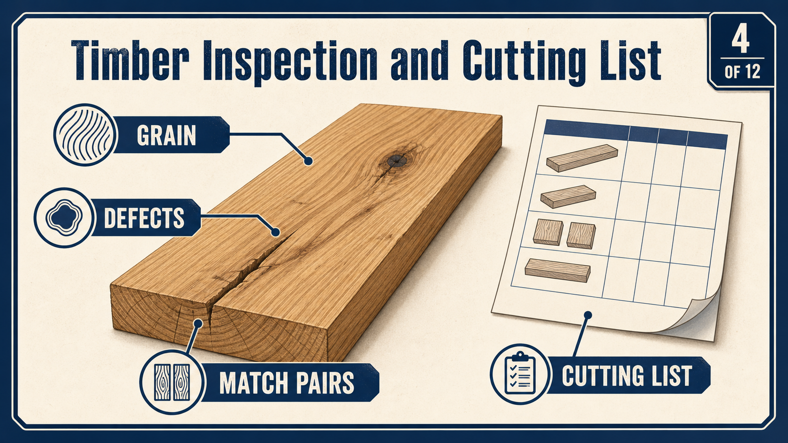

Inspect the whole board
Look along the length and across the width for bow, cup, twist, checks and damaged ends.
Industrial Technology – Timber
Weeks 3–4 guided learning

Module presentation
Use the presentation to preview Working drawings, dimensions and component orientation, From working drawing to cutting list, Timber selection, grain direction and defects before working through the theory, videos, checks and written evidence.
Two-week roadmap
Turn the supplied drawing into prepared, labelled components ready for accurate construction. Apply the procedures and checks to the actual bedside-table project before irreversible work continues.
Your work
Your entries save automatically in this browser. Use Print / Save PDF before leaving the page.
Theory 1


A working drawing communicates the exact information needed to manufacture the approved bedside table. Written dimensions show the finished size and position of each component, so always read the dimension figures rather than estimating from the drawing’s appearance. Use the front, side and plan views together to understand the slim proportions, tapered legs, shaped front apron and the relationship between the table’s parts.
A feature that is unclear in one view may be shown accurately in another. Component labels help match each piece to the cutting list and prevent similar rails, aprons or leg parts from being confused. Notes may identify important details such as matching parts, visible faces, grain direction, shaping requirements or the order of operations.
Before marking timber, confirm the correct component, reference face and orientation. Check each marked length and position against the drawing before cutting. Careful reading at this stage prevents mismatched parts, reversed tapers and wasted material later.
Theory 2
A cutting list is the bridge between the drawing and the timber rack. It identifies what is required before material is cut and helps the maker plan quantity, allowances, orientation and matching parts.
Use finished information carefully. The drawing describes the required component. The rough blank may need sensible allowance for damaged ends, saw kerfs and dressing, but that allowance must follow workshop practice rather than guesswork. Record each component name, quantity, material, finished requirement and any note about pairing, taper, curve or visible face.
Check the list against the assembly. Similar rails can have different locations or joint details. A cutting list is not complete until the total number of legs, side components, front and rear components, top pieces and approved storage parts agrees with the actual design.
Use the same label as the drawing and include its final location.
Count the complete project, including matching pairs and approved storage parts.
Use the teacher-approved material information and written dimensions.
Identify oversize blanks, matched grain, tapers, curves or joinery orientation.
Trace every cutting-list item back to the drawing and finished assembly.
Theory 3

A cutting list turns the approved working drawing into a clear record of every timber component needed for the bedside table. Each item should match the drawing’s component labels and include the required finished size, quantity and any shaping notes. Timber is usually cut slightly oversize before dressing so there is enough material to produce straight, square faces and accurate final dimensions.
Select boards carefully before marking. Check grain direction, colour and figure so visible parts, such as the top, drawer front and shaped apron, look consistent. Legs and matching rails should be selected as sets where possible so their appearance is balanced.
Avoid placing knots, splits, checks, severe grain changes or other defects in joints, tapers or narrow sections where they may weaken the component. Mark defects clearly and plan cuts around them. Confirm the best orientation of each part before cutting to reduce waste and ensure the grain supports both strength and appearance.
Look along the length and across the width for bow, cup, twist, checks and damaged ends.
Select colour and grain so the top, apron and paired legs appear deliberate rather than random.

Planing with favourable grain reduces tear-out and preserves narrow tapered components.

A board must remain large enough after defects and distortion are removed.
Theory 4
Prepare timber in a safe, orderly sequence so every component begins straight, square and suitable for accurate marking. A useful sequence is FEWTEL: face, edge, width, thickness, end and length. First, machine one broad surface flat and mark it as the face side.
Then produce one straight edge at 90 degrees to that surface and mark it as the face edge. These two datums become the reliable starting points for all later measurements. Use them when marking the slim tapered legs so matching tapers remain consistent, and when setting out the curved front apron so the shape is correctly positioned on the prepared stock.
Before machining, inspect each piece for splits, knots, loose grain, twist, bow, cup, embedded material and unsuitable grain direction. Confirm that the board has enough material for dressing and that defects will not remain in joints or shaped areas. Check each stage with a straightedge, square or rule before continuing.
Theory 5
A bedside table is viewed from several sides at close range, so timber placement affects both appearance and structural reliability. Selection should be deliberate before blanks are cut apart.
Keep sets together. Mark the four leg blanks as a group and decide which faces will be visible. Pair side rails and select the front apron or drawer front from material with a suitable, balanced grain pattern. Where the top is assembled from more than one piece, arrange the boards before joining so colour, grain direction and growth-ring pattern form an acceptable whole.
Let structure lead appearance. Attractive figure is not useful if it creates weak short grain at a taper, curve or joint. Rotate or relocate a component when possible; reject the piece when the defect cannot be placed safely. Record important placement decisions because they are strong folio evidence.
Compare colour, straightness, grain direction and defect position before separating the blanks.
Choose grain that suits the curved apron or approved drawer front without weakening it.
Arrange boards for a balanced surface and follow the approved joining plan.
Use sound material even when it is less decorative; hidden does not mean structurally unimportant.
Theory 6

A quality gate is a planned stop where evidence is checked before work moves to a harder-to-correct stage. Timber preparation needs these stops because joinery marked on a twisted, undersized or mislabelled component cannot be rescued by careful machining later.
Label clearly and consistently. Keep face-side and face-edge marks visible, add component location and show waste areas. Use a system that survives handling but can be removed before finishing. Do not rely on memory when four similar legs or rails are on the bench.
Check the actual component. Confirm straightness, squareness, width, thickness, length, grain orientation and defects. Compare matching parts directly. If a component has moved after machining, stop and decide whether it can be corrected without becoming undersize.
The board is sound, large enough and suitable for the planned component.
Face side, face edge and datum end are flat, square and marked.
Pairs align, orientation is clear and the cutting list is complete.
Use this checkpoint before moving from the supplied drawing and practice work into project components. Show the completed checks to your teacher before using machinery.
Use this short checkpoint before moving from the drawings and practice joinery into project components. Show the completed checks to your teacher before using machinery.
Open the supplied project planConfirm component orientation, joint location and prepared sizes before starting.
Guided practice
Each incorrect option explains the misunderstanding. Use the hint, return to the theory and keep trying until the question is mastered.
Apply your learning
Write a genuine first attempt, check the live guidance, compare with the appropriate response example and improve your explanation before self-assessing.
Finish the two-week block
Your answers save in this browser as you work, but browser storage is not the official submission. Save the completed page as a PDF before closing it.
No marks, answers or personal information are sent from this webpage.